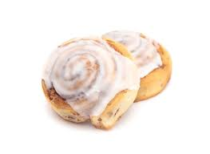

Cinnamon Rolls

Fluffy Warm Cinnamon Rolls
Nothing brings back your childhood more than home made cinnamon rolls made from scratch.
This easy to source recipe is easy to follow and requires minimal cooking supplies.
Ingredients
- Milk
- Flour
- One Egg
- Unsalted Butter
- Active-Dry Yeast
- Brown Sugar
- Cinnamon
- vanilla extract
Instructions
- Stir together warm milk, sugar, and yeast
- Add flour, brown sugar, melted butter, egg, salt, cinnamon, and vanilla extract to the yeast mixture.
- Transfer the dough to a lightly oiled bowl. Cover with plastic wrap or a dish towel and place the dough in
- Lightly grease a 9by 13-inch baking dish with butter or cooking spray. Turn the dough out onto a well-floured surface. Roll the dough into roughly a 12 by 18-inch rectangle.
- Spread the room temperature butter onto the cinnamon roll dough in a thin and even layer, leaving a ½-inch border down on long side of the dough.
- In a small bowl, stir together the brown sugar and cinnamon until combined. Sprinkle the sugar evenly over the buttered dough.
- Starting at one long end opposite of the unbuttered border, roll up the dough into a tight log. Using a serrated knife or unflavored dental floss, cut the log into 12 equal pieces, each about 1½ inches wide. Place the rolls cut side-down and evenly spaced in the prepared baking dish. Loosely cover the dish and let rise in a warm place until doubled in size, or for about 1 hour.
- While the dough rises, preheat the oven to 350 degrees Fahrenheit. Uncover the rolls and bake for 20 to 25 minutes, or until golden brown on top. Place the buns on a wire rack to cool. Meanwhile, beat the cream cheese, butter, vanilla, and salt together in a medium mixing bowl until smooth. Sift in the powdered sugar and beat on low speed until well combined. If desired, thin the frosting with 1 to 2 tablespoons of milk. Spread ⅓ of the frosting on the warm rolls as soon as they come out of the oven. Let them cool for 5 more minutes, and then spread the rest of the frosting on top. Enjoy the cinnamon rolls warm!
For mor recipes click here!